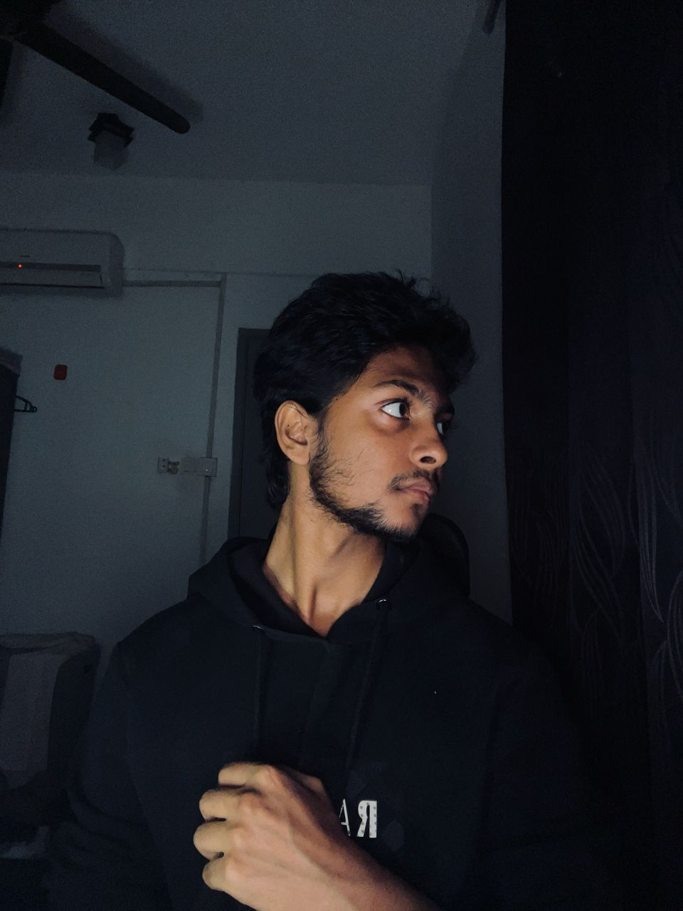

profile.jpgroot@kali:~/about$ cat profile.txt
Hi, I'm Mahir Asif — a final-year Cybersecurity student at Asia Pacific University of Technology and Innovation (APU), Malaysia, pursuing a BSc dual-awarded with De Montfort University, UK.
I'm a certified eJPT penetration tester specializing in web application security, API testing, and network exploitation. With real-world experience assisting engagements for an Australian company and Malaysian government clients, I bring a hands-on offensive security mindset backed by SOC operations exposure and Linux administration proficiency.
I'm actively building toward eCPPT, eWPTX, OSCP+ and pursuing advanced offensive security certifications. My approach combines methodical reconnaissance, manual exploitation, and clear technical reporting.
root@kali:~/about$ cat core_competencies.txt
$ Web App & API Penetration Testing $ Network Vulnerability Assessment $ SIEM Monitoring & Incident Triage $ Cloud Config Review (AWS / Azure) $ Linux Privilege Escalation $ Python & Bash Tool Developmentroot@kali:~/skills$ nmap -sV --script=proficiency-scan mahir.local
Starting Nmap 7.94SVN ( https://nmap.org ) at 2026-03-24 09:42 MYT Nmap scan report for mahir.local (192.168.69.1) [+] Host is up (0.0011s latency). PORT STATE SERVICE VERSION ──────────────────────────────────────────────────────────────root@kali:~/skills$ python3 lang_profiler.py
[*] Scanning programming language proficiency...root@kali:~/projects$ ls -la && cat */README.md
total 5 projects — drwxr-xr-x mahir mahirroot@kali:~/certs$ ls -la /etc/credentials/ && verify --all
-rw-r--r-- 4 certifications foundroot@kali:~/logs$ grep -r "ACHIEVEMENT" mahir.log --color=always
[2026-03-24] ACHIEVEMENT: Earned eJPT certification from INE Security (Credential #177694517) [2025-11-01] ACHIEVEMENT: Analyzed and triaged 50+ security alerts in live SOC under SLA constraints [2025-10-15] ACHIEVEMENT: Assisted real-world web app & API pentesting for Australian firm and Malaysian govt [2025-09-01] ACHIEVEMENT: Part of APU FSeC — first licensed Cybersecurity-as-a-Service university intern program [read article ↗] [2025-07-22] ACHIEVEMENT: Technical & Graphics Coordinator for APU Cyber Talk awareness event grep: 5 matches found in mahir.logroot@kali:~/experience$ ps aux --sort=-start | grep mahir
USER PID %CPU STARTED COMPANY ROLE ──────────────────────────────────────────────────────────────────────────root@kali:~/volunteer$ tail -f /var/log/volunteer.log
[Nov 2025] FSeC APU Open Day — Organization & Management Assistant └─ Represented APU's Faculty of Security (FSeC) during University Open Day └─ Engaged prospective students on cybersecurity career paths [Jul 2025] Technical & Graphics Coordinator — APU Cyber Talk └─ Designed promotional materials and handled technical coordination └─ Institutional cybersecurity awareness event — teamwork & creative execution --- Waiting for new entries ---root@kali:~/education$ cat /etc/os-release && uname -a
Linux mahir-kali 6.6.0-kali #1 SMP PREEMPT_DYNAMIC Debian 6.6 x86_64 GNU/Linux INSTITUTION="Asia Pacific University of Technology and Innovation (APU / APIIT)" PARTNER ="De Montfort University (UK)" DEGREE ="BSc (Hons) Computer Science — Specialism in Cybersecurity" PERIOD ="Nov 2023 – Nov 2026" CGPA ="3.41" RELEVANT_COURSES: + Network Security (Firewall, Web Proxy, IDS/IPS, IAM) + Python Automation, C & Assembly Programming + Red Hat Linux Administration (PAM, Access Control) + Red Team Operations (API Pentesting, Web Exploitation)root@kali:~$ cat ~/.languages
LANG_1="Bangla" # NATIVE — primary language LANG_2="English" # FLUENT — professional proficiency LANG_3="Hindi & Urdu" # BASIC — conversational LANG_4="Arabic" # BASIC — conversational LANG_5="Japanese" # BASIC — learning LANG_6="Bahasa Melayu" # BASIC — conversationalroot@kali:~$ cat ~/.config/interests.json | python3 -m json.tool
{ "interests": [ "Penetration Testing & CTFs", "Low-Level Programming", "Red Team Research", "Project Building & Side Hustles", "Fitness & Self-Improvement", "Business Ideas & Entrepreneurship", "Creative Design", "Cybersecurity News" ] }root@kali:~/archive$ find . -type f -name "*.url" | sort | xargs cat
[*] Enumerating cyber archive entries...root@kali:~$ whois mahir.local && netstat -an | grep LISTEN
% WHOIS lookup for mahir.local